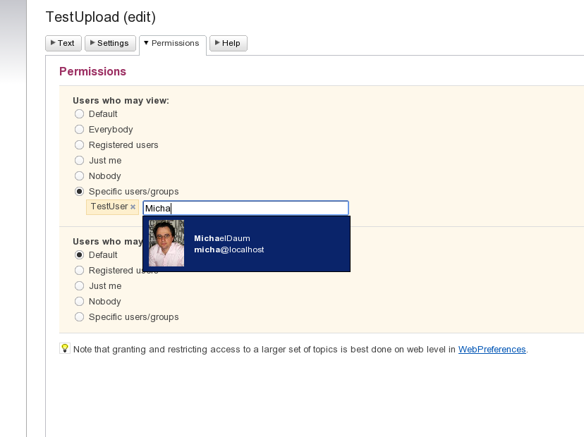

Development Links
Recent Changes
Last 10 Changes in the Development Web :
- WebStatistics
06 Feb 2010 by: AdminGroup - GenPDFAddOn
06 Feb 2010 by: GeorgeClark - ImprovePageLoadTime
06 Feb 2010 by: CrawfordCurrie - MoveLogsToWorking
06 Feb 2010 by: MartinCleaver - GoogleDocsIntegration
06 Feb 2010 by: CrawfordCurrieAndMartinCleaver - SvnRepository
06 Feb 2010 by: AdminGroup - GoogleDocsIntegration
06 Feb 2010 by: AdminGroup - AddContainsComparitorForQuerySearch
06 Feb 2010 by: AdminGroup - AllowingQuotesInSearchFormat
06 Feb 2010 by: AdminGroup - ProblemsWithHereDocuments
06 Feb 2010 by: AdminGroup - HereDocumentSyntaxForMacros
06 Feb 2010 by: AdminGroup
Foswiki Webs
Tools
Feature Proposal: It should be easier to get a definitive overview of the Access Controls present on a given topic.
Motivation
Contributors in private/protected areas have in the past been burnt by misunderstanding the access control situation in their web or individual topics. Even those that haven't been burnt, are given better piece of mind and are more likely to use the wiki if they can see a good accurate overview of who can and can't view/change their topics. Also, WebPermissionsPlugin? is a good start for users to add colleagues into a protected topic by themselves, but could do with some improvements.Description and Documentation
ShowAccessPlugin? was a good start for our installation. I modified it to use _getACLs in WebPermissionsPlugin? ::Core, so that it would properly display any ACLs embedded in topic metadata via that plugin. I also modified it to generate a list of users that can change (TWiki release version only shows users that can view). Really, this is still not entirely everything I'd like to do with ACLs: it'd be very useful to render a table of users with their profile metadata where desired. Examples soon...Examples
With some new tag handlers that would take aformat="" string, and maybe some work on the %USERINFO{}% handler, I'd like to build a topic for our users such as this:
Assume in Development/WebPreferences:
Access Controls
For this web (Development), default permissions are as follows:
- Who can view? Users: HomerSimpson? and Members of: EverybodyLikesNedFlanders?
- Who can change? Users: AmbassadorKosh?
For AccessControlQuery:
| User | View | Change | Instititution | Via groups |
|---|---|---|---|---|
| AmbassadorKosh? | YES | YES | Vorlon Empire | EnemiesOfChaos? , EverybodyLikesNedFlanders? |
| NedFlanders? | YES | NO | The Nedstitution | EverybodyLikesNedFlanders? |
| HomerSimpson? | YES | NO | Duffaholics Anonymous | AgentOfChaos? , DuffFans? |
Impact
As mentioned by CDot, this work could drastically degrade performance on sites with many users or auth schemes other than the built-in arrangements (such as LDAP, Shibboleth, etc). The site I maintain has 300 users and already if somebody queries the Main page (which everybody can view, so 300 records returned), there's a 6-10 second wait at the server (1GB/1GHz VM host running a few other things). CDot had some ideas for caching ACLs (extending DBCacheContrib?) which could alleviate the problem somewhat (What about webcrawlers that will try to hit every single "view access controls" button that might be in a site's template?). Maybe this sort of functionality should limit itself to the first 100 results (the usage scenarios I'm thinking of are for small groups of say 1 to 20 paranoid contributors to check that their small group of colleagues can view or change some topics anyway).
| WhatDoesItAffect? : | %WHATDOESITAFFECT% |
Implementation
-- Contributors: PaulHarvey - 24 Jun 2009Discussion
I am still working on this topic... will document the new taghandlers I have in mind and the UI tweaks for WebPermissionsPlugin? .
-- PaulHarvey - 24 Jun 2009
Hey there. Here's a screenshot of the upcoming NatEditPlugin that makes use of SetVariablePlugin to edit permission settings of a topic during edit:

While that's only on a per topic base, it shows how to ease setting permissions substantially by informal description of permissions to be set behind the scene. The list of rules for view and change roughly outline the most frequently use cases, afaik.
-- MichaelDaum - 24 Jun 2009
I've been working on a similar thing. I've updated WebPermissionsPlugin for topic ACLs so that it correctly takes any permissions inherited from the web into account as well instead of just the settings in the topic. I've also created a 'simple options' page with the options that you can see in the screenshot below (plus, when ALLOWWEBVIEW is set, there is a Group read/write access option). I don't have the predictive username input field, yet. The Custom ACLs page is the one you already know from WebPermissionsPlugin for topic ACLs.
The only 'issue' is that it is written in (tm)wiki for now (until I've got the time to migrate I'm still doing development on twiki 4.2.3 . yeah, I know, I never will have the time so just do it!). I can attach the files to the WebPermissionsPlugin dev topic and you can have a look.
-- DavidPatterson - 24 Jun 2009
OK, the WebPermissionsPlugin hasn't been released on f.o yet so there's no dev topic. You can find a ported version (completed?) of it in the svn with a rest handler upgrade to the Web Permissions table.
Here is a zip of my updated files of the (tm)wiki version of WebPermissionsPlugin. I've only updated the topic side of things so there are no overlaps apart from the code which commits the changes to the web ACLs (to be found in both versions under the comment "# Commit changes to ACLs").
-- DavidPatterson - 24 Jun 2009